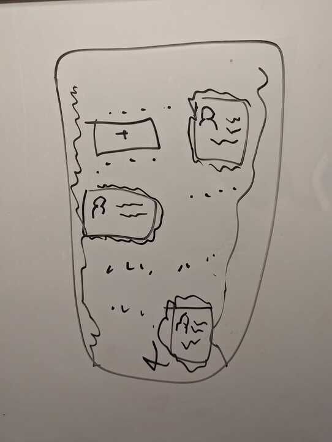
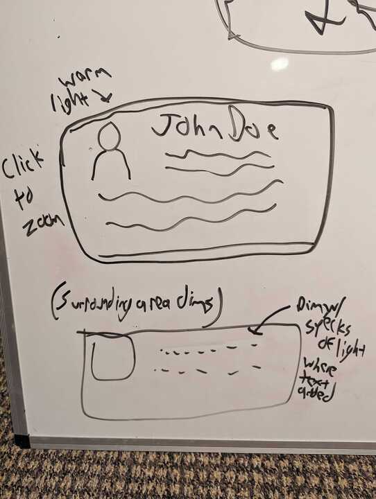

Light and Dark: This painting depicts New York City at night, with the glow of lights illuminating various areas. The building walls are the darkest area of the painting, aside from the black sky. The traffic/street area serves as the brightest part of the painting, with streetlights and car lamps even reaching up to illuminate the buildings above. There is a lit penthouse area at the top of the central building. https://culturacolectiva.com/en/art/chiaroscuro-light-shadows-technique-main-artists/ Rule of Thirds: The central skyscraper is the focal point of the building, and it takes up much of the central third of the painting. The circular window draws the eye, and it is also situated around two-thirds of the way up the painting. This isn't a landscape painting, but since the buildings match the aspect ratio, the verticality of the painting works overall. https://www.virtualartacademy.com/the-rule-of-thirds-in-art/ Balance: The main competing forces in the painting are light and dark, but they find some balance, and take up around half of the painting each. There are discrete light points all over, with windows and traffic, but there are some specific areas where things blend a lot more. The proportionally more prevalent discrete areas help to call attention to the more blended areas. The visual weight of the painting is distributed relatively evenly, even though it is asymmetrical. https://www.thoughtco.com/definition-of-balance-in-art-182423 O’Keefe, Georgia. New York, Night. 1929, The Sheldon, Lincoln, NE.
 This UI is designed for a mobile business card/contact storage app. It is mainly dark (though the whiteboard is white, just imagine the colors are inverted), with lit business cards acting like the windows in the painting. There are other discretely lit points to serve as placeholders, and light radiates from the two corners of the screen. Each card takes up around one-sixth of the screen. I am replicating the darkness and light, with both discrete and radiating areas, as well as window-like areas that are lit. It is also vertically-focused. Something insightful I've learned: I really like dark mode for things, and sketching it out mentally then transferring it to a physical medium is very hard, because white is the default color for most things used for design (whiteboard, paper, post-it, etc.), and it takes a little more mentally to have to imagine every dark and light area flipped.